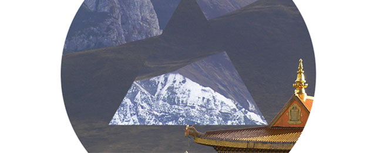

Tibetian Singing Bowl
Visit page →This project was a design experiment were I tried to take poster work as inspiration and create a website with the same design style. The project was mainly focused on creating the elements using only HTML instead of full graphics. I chose the theme of a tibetan singing bowl because its very nature oriented as other works that I was trying to replicate. The project can also be found on GitHub.
